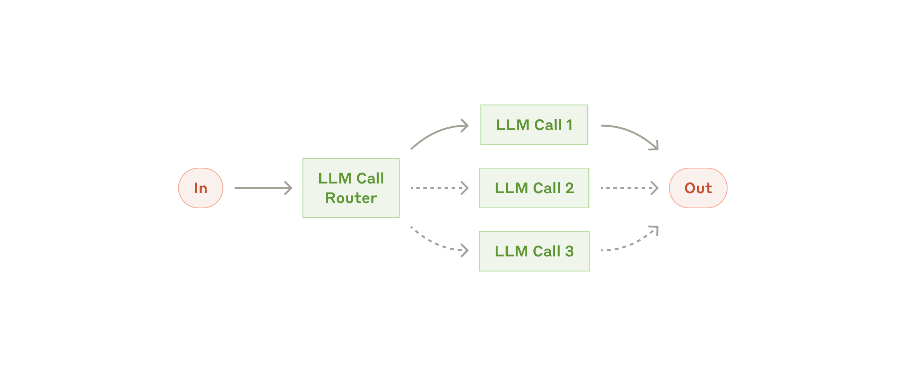
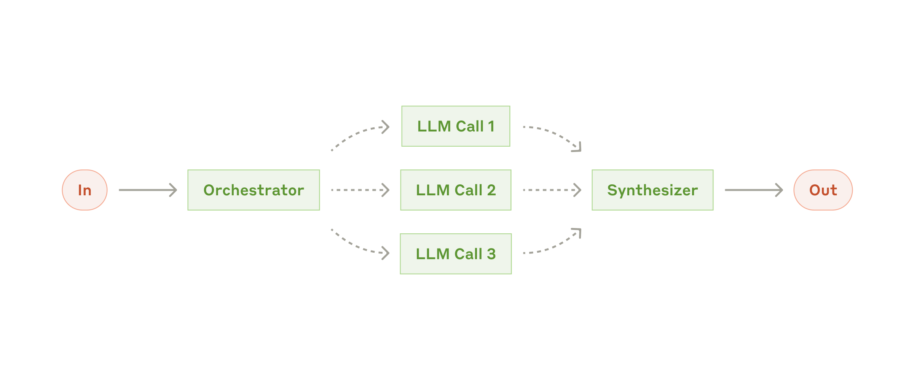
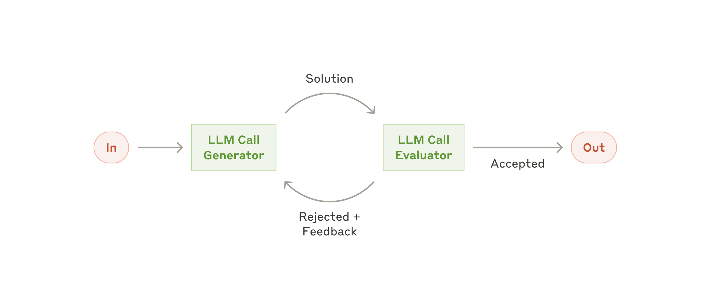

Five production patterns. Who picks the next step?
Your one win today
Name Anthropic's five workflow patterns, and apply the one-question test — who picks the next step? — to any architecture an interviewer sketches.
1 · The line, restated
Lesson 0001 gave you the test. Today you get the menu. Anthropic’s production taxonomy, from the post every interviewer has read:[1]
Workflow
LLMs and tools orchestrated through predefined code paths. Your code decides the order of steps.
Agent
The LLM dynamically directs its own process and tool usage. Your code maintains the loop; the model chooses the path.
Both sit on the same building block: the augmented LLM — a model with retrieval, tools, and memory available.[1] An agent is an augmented LLM plus a model-directed loop. A workflow is an augmented LLM (or several) whose next step is in your graph.
Anthropic’s first advice, which you will quote in interviews: find the simplest solution possible, and only increase complexity when it demonstrably helps. Agentic systems trade latency and cost for flexibility. For many apps, one well-prompted LLM call with retrieval is enough.[1]
2 · Five workflows, one axis
The five patterns below are all workflows — even orchestrator-workers, which looks agent-like — because a programmer wrote the topology. The axis is how much of the path is fixed vs. chosen at runtime.
Prompt chaining
A sequence of LLM calls, each consuming the last. Add programmatic gates between steps so a bad intermediate cannot poison the rest. Use when the task cleanly decomposes into fixed subtasks. You buy accuracy with latency.
Classify the input, then send it to a specialized prompt or model. Use when categories are distinct and classification is reliable. Optimizing one category no longer wrecks the others.

Anthropic — the routing workflow.
Parallelization
Two flavors. Sectioning: independent subtasks run at once. Voting: the same task run several times, then aggregated. Use for speed, or for confidence from multiple attempts.
Anthropic — the parallelization workflow.
Orchestrator–workers
A lead LLM breaks the job into subtasks at runtime and delegates to workers, then synthesizes. Subtasks are not pre-defined — that is the difference from parallelization. The topology is still yours.

Anthropic — the orchestrator–workers workflow.
Evaluator–optimizer
One LLM generates; another critiques against clear criteria; loop until the evaluator accepts. Use only when (a) criteria are crisp and (b) feedback actually improves the next draft.

Anthropic — the evaluator–optimizer workflow.
Then: the agent
Drop the fixed graph. The model picks tools in a loop until a goal is met. Reach for this when you cannot enumerate the steps in advance — when the path depends on what you discover.
Anthropic — autonomous agent, the far end of the same axis.
Print the cheat sheet. The names are interview vocabulary; the “when to use” lines are the actual skill.
3 · The cost of climbing the ladder
Each rung spends more tokens, more latency, and more ways to fail. Anthropic: the most successful production systems were not using complex frameworks. They were composing these patterns in a few lines of API code.[1] Dex Horthy independently observed the same: products billed as “agents” are often mostly deterministic code with LLM steps at the magical points.[2]
Interview angle
“We need an agent for invoice processing.” The strong answer: default to a workflow. Invoices have known stages (extract → validate → route → post). That is prompt chaining plus routing, with a human gate on post. An agent is justified only for the residue — exceptions whose next step truly cannot be enumerated.
4 · Retrieval practice
1. Which pattern is it: a lead model invents subtasks at runtime and assigns them?
Correct. Parallelization's subtasks are pre-defined. Orchestrator–workers invent them from the specific input. That is the documented distinction.
The documented difference from parallelization: subtasks aren't pre-defined; the orchestrator determines them from the input. Option 2.
2. A pipeline summarizes, then translates, then emails — always in that order. Agent or workflow?
Correct. Who picks the next step? The programmer. LLM involvement is necessary for neither category on its own.
The test is control flow, not LLM-count or SDK. Fixed order = workflow. Option 3.
3. When does Anthropic say to reach for an agent rather than a workflow?
Correct. Flexibility is the only reason to give the model the steering wheel — and you pay in cost, latency, and failure modes.
Frameworks and token caps are not the test. Use an agent when the path depends on what you discover. Option 1.
4. Evaluator–optimizer is a good fit when…
Correct. Anthropic's two signs of fit: the output can be demonstrably improved by feedback, and the LLM can give meaningful feedback itself.
Two models do not make a multi-agent system, and looping without improvement is just spend. Option 3.
5 · Read next (primary source)
Anthropic — Building effective agents. Read the workflow patterns section in full. This is the source the industry converged on. Optional: the cookbook implementations of chain, route, and parallel — short enough to skim the functions, not the notebook chrome.
6 · Lock it in
Recite the five names, then the one-line “when.” Cover this page.